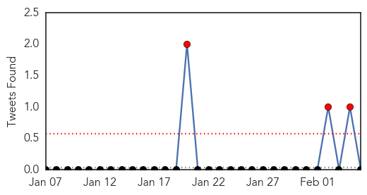

Dengue Fever
30-Day Web Trend
2 alerts, 0 warnings
30-Day Twitter Trend
4 alerts, 0 warnings

Article Locations

Article Confidences

Top Articles:
Top Tweets:
- 0.605
- Flavivirus news: Johor State, Malaysia reports 700 dengue fever cases in January - Outbreak New... http://t.co/AWy5BOeAok pathogenposse
- 0.501
- Flavivirus news: Dengue fever warning - Solomon Star: Dengue fever warningSolomon StarThe Disea... http://t.co/3SqB2dC5vz pathogenposse
Hepatitis
30-Day Web Trend
1 alerts, 0 warnings

30-Day Twitter Trend
0 alerts, 0 warnings
Article Locations

Article Confidences

Top Articles:
Top Tweets:
-
No tweets found for Feb 05, 2015